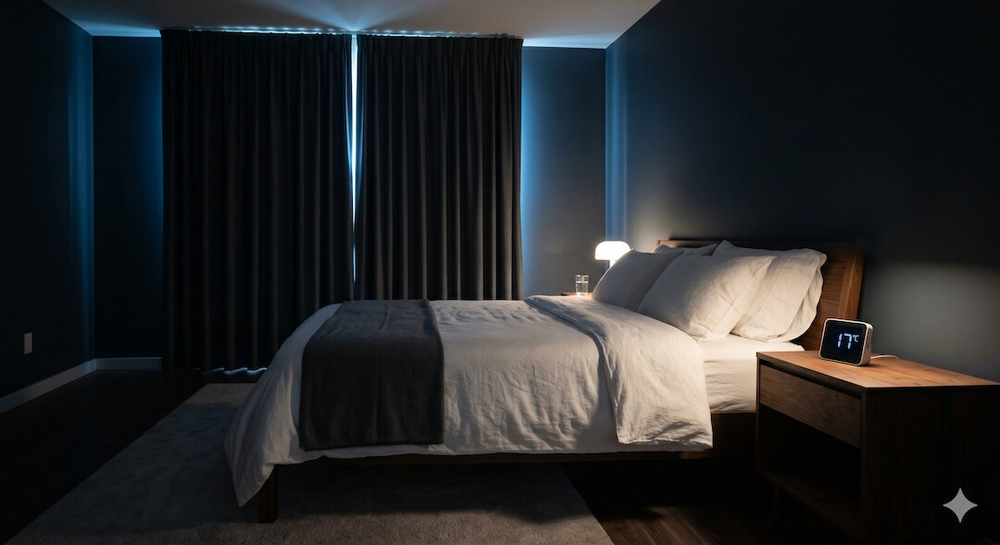
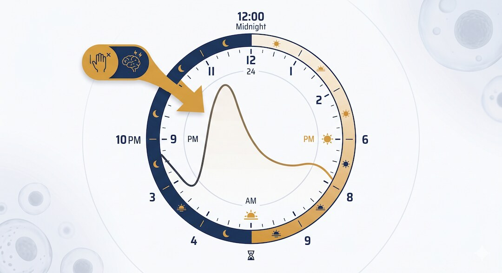

Budzenie się w środku nocy to jeden z najczęstszych problemów zdrowotnych po pięćdziesiątce – i jeden z najbardziej bagatelizowanych. Tymczasem przewlekła fragmentacja snu zwiększa ryzyko chorób sercowo-naczyniowych, insulinooporności i zaburzeń nastroju. Ten artykuł zestawia to, co rzeczywiście działa według nauki: od dawkowania melatoniny, przez temperaturę sypialni, po sygnały wymagające wizyty u specjalisty.
Szybka odpowiedź
Budzenie się o 3 w nocy po 50 roku życia najczęściej wynika ze słabszego snu głębokiego, wcześniejszego wzrostu kortyzolu, alkoholu, kofeiny, nykturii albo bezdechu sennego, dlatego najpierw warto ustalić stałą porę wstawania, ograniczyć ekrany i kofeinę wieczorem, schłodzić sypialnię do 16-18°C, a przy chrapaniu lub duszności skonsultować lekarza.
Kluczowe wnioski
- Przebudzenia nocne po 50. mają podłoże biologiczne – głównie spadek melatoniny i zmiany architektury snu – ale dają się ograniczyć konkretnymi działaniami.
- Melatonina w dawce 0,5–1 mg skraca czas zasypiania, ale nie eliminuje nocnych przebudzeń – to chronobiotyk, nie środek nasenny.
- Terapia poznawczo-behawioralna bezsenności (CBT-I) jest skuteczniejsza od leków nasennych w długoterminowym leczeniu bezsenności według wytycznych AASM.
- Temperatura sypialni 16–18°C i materac średniotwardości to warunki środowiskowe o potwierdzonym wpływie na jakość snu głębokiego (faza N3).
Dlaczego osoby po 50. budzą się w nocy?
Sen po pięćdziesiątce zmienia się w sposób biologicznie nieuchronny. Badania nad architekturą snu wykazują, że z wiekiem maleje udział snu głębokiego (faza N3), a wzrasta częstość przebudzeń nocnych. Kluczowym mechanizmem jest stopniowe obniżenie wydzielania melatoniny przez szyszynkę oraz przesunięcie rytmu dobowego w kierunku wcześniejszego zasypiania i budzenia się – zjawisko określane jako zaawansowanie fazy snu.
Metaanaliza Ohayon i wsp., obejmująca ponad 65 badań i 3500 zdrowych uczestników, wykazała, że całkowity czas snu skraca się średnio o 8–10 minut na dekadę po 20. roku życia, a sen głęboki (N3) spada z ok. 20% w młodości do 5–7% po 60. roku życia. Efektem jest lżejszy sen podatny na przebudzenia przez bodźce zewnętrzne (hałas, potrzeba oddania moczu) lub wewnętrzne (ból, refluks, wahania hormonalne). To zmiana fizjologiczna, którą można skutecznie modulować; szerszy kontekst znajdziesz też w przewodniku sen po 50. roku życia – ale nie można jej całkowicie wyeliminować samym suplementem.
Osobny czynnik to nykturie, czyli konieczność wstawania w nocy do toalety, dotykająca ponad 50% osób po 60. roku życia. Nakłada się ona na obniżoną zdolność do ponownego zasypiania charakterystyczną dla starzejącego się układu nerwowego i może być pierwszym objawem przerostu prostaty u mężczyzn lub nadreaktywnego pęcherza u kobiet – obu stanów wymagających odrębnego leczenia.
- Faza snu głębokiego (N3) spada z ok. 20% w młodości do 5–7% po 60. roku życia
- Szyszynka produkuje znacznie mniej melatoniny po 50. – nocne stężenie hormonu spada nawet o 50%
- Rytm dobowy przesuwa się do przodu (zaawansowanie fazowe): wcześniejsza senność wieczorna i wcześniejsze przebudzenie
- Nykturie dotyczy ponad 50% osób po 60. roku życia i jest jedną z głównych przyczyn fragmentacji snu

Czego naprawdę możesz oczekiwać od melatoniny?
Melatonina jest hormonem regulującym rytm dobowy, a nie klasycznym lekiem nasennym. Jej naturalne stężenie spada o ok. 50% między 40. a 70. rokiem życia, co częściowo wyjaśnia trudności z zasypianiem u osób starszych. Metaanaliza Ferracioli-Oda i wsp. z 2013 roku wykazała, że suplementacja melatoniną skraca czas zasypiania średnio o 7 minut i nieznacznie wydłuża całkowity czas snu, bez istotnego efektu na liczbę przebudzeń w nocy.
Dawkowanie ma zasadnicze znaczenie, ponieważ większość dostępnych preparatów zawiera wielokrotnie za wysoką dawkę. Badania farmakologiczne wskazują, że dawka 0,5–1 mg przyjęta 30–60 minut przed snem jest skuteczna u dorosłych i nie powoduje zjawiska przyzwyczajenia ani tłumienia własnego wydzielania hormonu. Dawki 5–10 mg, popularne w wielu suplementach, prowadzą do stężeń melatoniny w surowicy wielokrotnie przekraczających wartości fizjologiczne – nie poprawiają efektu nasennego, a mogą powodować senność następnego dnia i bóle głowy.
Melatonina działa najlepiej przy zaburzeniach rytmu dobowego – jet lag, praca zmianowa, zaawansowana faza snu – a nie przy bezsenności spowodowanej stresem, bólem lub bezdechem. Przed włączeniem suplementacji warto ocenić, czy problem leży w trudności zasypiania, czy w budzeniu się w nocy i niemożności ponownego zaśnięcia. To różne mechanizmy wymagające różnych interwencji.
- Skuteczna dawka: 0,5–1 mg melatoniny przyjęta 30–60 minut przed snem
- Dawki 5–10 mg nie są bardziej skuteczne i mogą powodować senność następnego dnia
- Melatonina skraca czas zasypiania o ok. 7 minut – nie eliminuje przebudzeń nocnych
- Wskazanie: zaburzenia rytmu dobowego (jet lag, zaawansowana faza snu) – nie bezsenność pierwotna

Które metody higieny snu i CBT-I mają najmocniejsze dowody?
Higiena snu to zestaw zachowań i warunków środowiskowych, które nauka konsekwentnie wiąże z jakością nocnego odpoczynku. W odróżnieniu od farmakoterapii nie wymaga recepty ani nie rodzi ryzyka uzależnienia; przy przewlekłych problemach warto równolegle uporządkować badania po 50. roku życia . Największą siłę dowodową spośród wszystkich niefarmakologicznych metod ma terapia poznawczo-behawioralna bezsenności (CBT-I), zalecana przez AASM jako leczenie pierwszego rzutu przewlekłej bezsenności u dorosłych, w tym u osób starszych.
CBT-I łączy kilka technik: ograniczenie czasu spędzanego w łóżku do faktycznego czasu snu (sleep restriction), kontrolę bodźców (łóżko wyłącznie do snu i aktywności seksualnej), techniki relaksacyjne oraz restrukturyzację poznawczą przekonań o śnie. Badania wykazują, że CBT-I poprawia efektywność snu o 10–20 punktów procentowych i skraca czas zasypiania o ok. 20 minut, a efekty utrzymują się przez 6–12 miesięcy po zakończeniu terapii – w przeciwieństwie do leków nasennych, których działanie ustępuje po odstawieniu.
Spośród zasad higieny snu największe znaczenie praktyczne mają: stała pora wstawania 7 dni w tygodniu (tzw. anchor time), unikanie niebieskiego światła przez 60–90 minut przed snem, rezygnacja z drzemek dłuższych niż 20 minut po godzinie 15:00 oraz ograniczenie kofeiny po godzinie 14:00. Czas półrozpadu kofeiny wynosi 5–6 godzin, co oznacza, że kawa wypita o 15:00 utrzymuje połowę swojego stężenia w organizmie jeszcze o godzinie 21:00.
- Stała pora wstawania 7 dni w tygodniu – ważniejsza niż pora zasypiania dla regulacji rytmu dobowego
- Brak ekranów 60–90 minut przed snem – niebieskie światło hamuje wydzielanie melatoniny przez szyszynkę
- Drzemki: maksymalnie 20 minut przed godziną 15:00 – dłuższe niszczą ciśnienie snu (poziom adenozyny)
- CBT-I: skuteczniejsza niż leki nasenne w perspektywie długoterminowej według wytycznych AASM 2021

Jak temperatura sypialni i materac wpływają na sen?
Temperatura ciała spada naturalnie w fazie zasypiania – ten mechanizm termoregulacyjny jest ewolucyjnie zakodowany i stanowi jeden z sygnałów inicjujących sen. Badania wykazują, że optymalna temperatura sypialni dla zdrowego snu wynosi 16–18°C dla większości dorosłych. Wyższe temperatury środowiskowe znacząco skracają czas fazy N3 i REM, co przekłada się na subiektywne poczucie niewyspania mimo odpowiedniej liczby godzin w łóżku.
Wybór materaca to obszar, w którym marketing wyprzedza naukę. Dostępne badania – w większości finansowane przez producentów lub prowadzone na małych próbach – sugerują, że materace średniotwardości zmniejszają ból kręgosłupa i poprawiają jakość snu u osób z przewlekłym bólem pleców lepiej niż materace bardzo twarde lub bardzo miękkie. Brakuje jednak dużych randomizowanych badań z niezależnym finansowaniem i długim follow-up, które pozwoliłyby na jednoznaczne rekomendacje dla osób 50+.
Poza temperaturą i materacem, zasłony zaciemniające i redukcja hałasu mają udokumentowany pozytywny wpływ na jakość snu w środowiskach miejskich. Według przeglądu WHO dotyczącego zdrowotnych skutków hałasu środowiskowego ekspozycja na dźwięki powyżej 40 dB w nocy zwiększa częstość przebudzeń i skraca fazę REM. 40 dB to poziom głośnej rozmowy szeptem – w wielu miastach europejskich nocny hałas komunikacyjny regularnie go przekracza.
- Optymalna temperatura sypialni: 16–18°C wspierająca naturalny spadek temperatury ciała inicjujący sen
- Materac średniotwardości: najlepiej udokumentowany wybór dla osób z bólem pleców
- Zaciemnienie sypialni: blackout curtains eliminują światło zakłócające nocne wydzielanie melatoniny
- Hałas nocny powyżej 40 dB skraca fazę REM i fragmentuje sen (WHO)

Jak kortyzol i stres wybudzają o 3 w nocy?
Przebudzenia między 2. a 4. w nocy mają często hormonalne podłoże związane z rytmem dobowym kortyzolu. Kortyzol – hormon stresu produkowany przez nadnercza – osiąga najniższy poziom nocny około godziny 2–3, a następnie gwałtownie rośnie. U osób z przewlekłym stresem i dysregulacją osi HPA (podwzgórze–przysadka–nadnercza) wzrost kortyzolu następuje zbyt wcześnie, wywołując spontaniczne przebudzenie w środku nocy.
Badania polisomnograficzne u pacjentów z uogólnionym zaburzeniem lękowym wykazują skróconą latencję REM, zwiększoną aktywność EEG w paśmie beta (związaną z pobudzeniem) oraz podwyższone nocne stężenie kortyzolu w ślinie. Jeśli stres nakłada się na oponkę brzuszną i wysokie napięcie w dzień, pomocny będzie też tekst jak obniżyć kortyzol po 50-tce. Praktyczne interwencje obniżające aktywność osi stresu przed snem: progresywna relaksacja mięśniowa (PMR) oraz oddychanie przeponowe (technika 4-7-8) wykazały redukcję nocnych przebudzeń w randomizowanych badaniach kontrolowanych u dorosłych z bezsennością.
Alkohol jest powszechnie stosowany przez osoby 50+ jako środek ułatwiający zasypianie – i jest to jeden z najczęstszych błędów higienicznych. Choć alkohol skraca latencję snu, zaburza jego architekturę: tłumi sen REM w pierwszej połowie nocy i wywołuje efekt odbicia w drugiej – właśnie wtedy, gdy etanol jest metabolizowany, następuje wzrost aktywności układu pobudzenia. To tłumaczy klasyczne przebudzenie między 2. a 4. w nocy u osób regularnie pijących wieczorem.
- Kortyzol osiąga nocne minimum ok. 2–3 w nocy, po czym zaczyna gwałtownie rosnąć – przy dysregulacji HPA wzrost następuje za wcześnie
- Progresywna relaksacja mięśniowa (PMR) i technika oddychania 4-7-8 redukują nocne przebudzenia związane ze stresem
- Alkohol wieczorem: skraca latencję snu, ale wywołuje przebudzenia w drugiej połowie nocy przez efekt odbicia
- Kofeina, nikotyna i obfite posiłki spożyte na mniej niż 3 godziny przed snem pobudzają układ nerwowy i fragmentują sen

Kiedy zaburzenia snu wymagają wizyty u lekarza?
Nie każdy problem ze snem da się rozwiązać zmianą materaca lub suplementem. Obturacyjny bezdech senny (OSA) dotyka według szacunków 30–40% mężczyzn i 20–25% kobiet po 50. roku życia. OSA pozostaje nierozpoznana u większości chorych, ponieważ przebudzenia i chrapanie są normalizowane jako naturalny element starzenia. Nieleczony bezdech zwiększa ryzyko nadciśnienia tętniczego, udaru mózgu i choroby wieńcowej, dlatego przy wysokich pomiarach warto przeczytać także jak nadciśnienie wpływa na elastyczność naczyń .
Oprócz bezdechu nocne przebudzenia mogą być symptomem: zespołu niespokojnych nóg (RLS), nocnego bólu przewlekłego (artretyzm, fibromialgia), refluksu żołądkowo-przełykowego nasilającego się w pozycji leżącej, zaburzeń rytmu serca lub nocnych hipoglikemii u osób z cukrzycą. Każda z tych przyczyn wymaga odrębnego protokołu diagnostyczno-leczniczego, którego nie zastąpią interwencje higieniczne ani suplementy.
Sygnały wymagające pilnej konsultacji lekarskiej to: przebudzenia z uczuciem duszności lub kołataniem serca, chrapanie z obserwowanymi przez partnera bezdechami, senność dzienna uniemożliwiająca normalne funkcjonowanie oraz poprawa snu wyłącznie po alkoholu lub leku bez recepty. Więcej tekstów profilaktycznych znajdziesz w dziale zdrowie. Badaniem diagnostycznym pierwszego rzutu przy podejrzeniu OSA jest polisomnografia lub uproszczone badanie snu w domu (Home Sleep Apnea Test, HSAT).
Zastrzeżenie medyczne: treści zawarte w tym artykule mają wyłącznie charakter edukacyjny i informacyjny. Nie zastępują konsultacji lekarskiej, diagnozy ani indywidualnych zaleceń terapeutycznych. Jeśli problem ze snem utrzymuje się dłużej niż 4 tygodnie lub towarzyszą mu niepokojące objawy, skonsultuj się z lekarzem pierwszego kontaktu lub specjalistą medycyny snu.
- Sygnał alarmowy: przebudzenia z dusznością lub chrapanie z bezdechami – konieczna diagnostyka OSA
- Zespół niespokojnych nóg (RLS): nieprzyjemne uczucie w nogach nasilające się wieczorem – wymaga leczenia neurologicznego
- Refluks (GERD): przebudzenia z pieczeniem w przełyku – zmiana pozycji snu i konsultacja gastroenterologiczna
- Bezsenność trwająca ponad 4 tygodnie z zaburzeniami funkcjonowania w ciągu dnia: wskazanie do poradni leczenia zaburzeń snu
Zobacz też: ai w medycynie czy naprawde pomaga pacjentom fakty badania.
Najczęściej zadawane pytania
Dlaczego budzę się dokładnie o 3 w nocy i nie mogę zasnąć?
Przebudzenia o 2–4 w nocy mają najczęściej dwie przyczyny fizjologiczne: naturalny wzrost kortyzolu, który u osób z dysregulacją osi stresu następuje zbyt wcześnie, oraz obniżoną zdolność do utrzymania snu głębokiego wynikającą ze starzenia się architektury snu. U osób spożywających alkohol wieczorem dochodzi trzecia przyczyna: efekt odbicia po metabolizmie etanolu, skutkujący wzrostem aktywności układu nerwowego właśnie w tym przedziale czasowym.
Jaka dawka melatoniny jest odpowiednia dla osoby po 50. roku życia?
Badania farmakologiczne wskazują na dawkę 0,5–1 mg przyjętą 30–60 minut przed planowanym snem jako skuteczną i bezpieczną dla dorosłych. Popularne preparaty zawierające 5–10 mg melatoniny nie wykazują wyższej skuteczności, a mogą powodować senność następnego dnia. Przed włączeniem melatoniny należy skonsultować się z lekarzem lub farmaceutą, szczególnie przy stosowaniu leków przeciwzakrzepowych lub kardiologicznych.
Czym różni się CBT-I od zwykłych zasad higieny snu?
Higiena snu obejmuje zalecenia środowiskowe i behawioralne (temperatura, ekrany, kofeina), natomiast CBT-I to ustrukturyzowana terapia łącząca te elementy z technikami ograniczenia snu, kontroli bodźców oraz restrukturyzacji przekonań o śnie. CBT-I wymaga aktywnej pracy z terapeutą lub programem cyfrowym przez 6–8 tygodni, ale jej efekty utrzymują się 6–12 miesięcy po zakończeniu – znacznie dłużej niż efekty farmakoterapii.
Jaka temperatura sypialni sprzyja snu po 50. roku życia?
Badania wskazują na zakres 16–18°C jako optymalny dla większości dorosłych. Niższa temperatura środowiskowa wspiera naturalny spadek temperatury ciała inicjujący sen głęboki (fazę N3). Osoby doświadczające nocnych potów lub uderzeń gorąca – szczególnie kobiety w menopauzie – mogą potrzebować aktywnego chłodzenia sypialni i powinny omówić dostępne opcje lecznicze z ginekologiem, jeśli środki środowiskowe okazują się niewystarczające.
Kiedy bezsenność wymaga wizyty u lekarza, a nie wyłącznie zmiany nawyków?
Do lekarza warto zgłosić się, gdy bezsenność trwa ponad 4 tygodnie, pogarsza funkcjonowanie w dzień, pojawia się chrapanie z bezdechami, duszność, kołatanie serca albo sen poprawia się wyłącznie po alkoholu lub lekach bez recepty. To może wskazywać na bezdech, choroby serca, tarczycy lub depresję.
Jeśli chcesz połączyć sen, nocne wybudzenia, regenerację i codzienne nawyki w jeden plan, przejdź do Centrum Snu po 50-tce.
Źródła
- National Institute on Aging (NIA), A Good Night's Sleep, NIH, 2023
- Ohayon MM et al., Meta-analysis of quantitative sleep parameters from childhood to old age in healthy individuals, Sleep, 2004
- Ferracioli-Oda E, Qawasmi A, Bloch MH, Meta-analysis: melatonin for the treatment of primary sleep disorders, PLoS ONE, 2013
- Sleep Foundation, Aging and Sleep, National Sleep Foundation, 2024
- Mayo Clinic, Sleep tips: 6 steps to better sleep, Mayo Clinic Health Library, 2023
- American Academy of Sleep Medicine (AASM), Clinical Practice Guidelines for the Pharmacologic Treatment of Chronic Insomnia, AASM, 2021
- Centers for Disease Control and Prevention (CDC), Sleep and Sleep Disorders – Data and Statistics, CDC, 2023
Uwaga: Artykuł ma charakter informacyjny i edukacyjny. Nie zastępuje konsultacji lekarskiej, diagnozy ani leczenia.